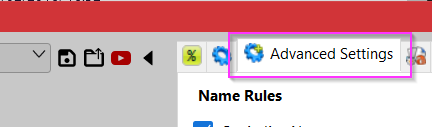
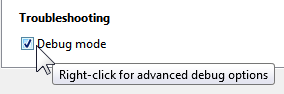
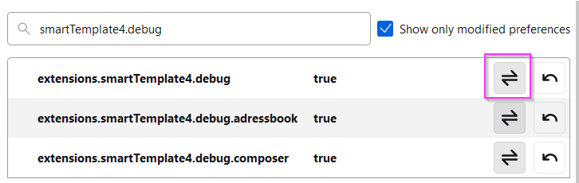
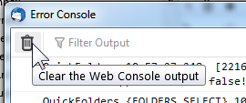
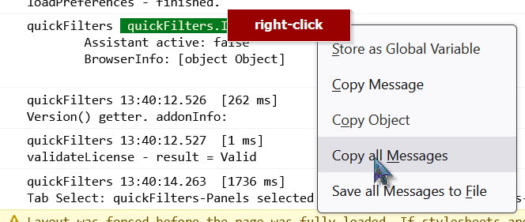

SmartTemplates :: Add-on Troubleshooting
No Software is without trouble.
We try to publish software with less of trouble for you but if you have some, we recommend to use the built in Javascript error console, which can be invoked from the Tools menu: Select Developer Tools / Error console or press Ctrl+Shift+J
Instructions for creating a debug log (SmartTemplates)
-
First, open SmartTemplates Settings:

Then open the advanced Settings page

- Scroll down to the Troubleshooting section and activate Debug mode.
-
Right-click debug mode, click om on the disclaimer (it's safe as it only allows changing relevant debug switches)

-
Depending on what kind of error you are investigating, find the following additional debug settings and activate them:
extensions.quickfolders.debug.* true 
- Open the Errors console in Thunderbird's main menu: Tools / Developer Tools / Error Console.
- Clear the output
 -
IMPORTANT: Configure the console as follows:

- Now you're ready for a test - try to reproduce the error in SmartTemplates by carrying out only the last actions that lead to the problem.
- Right-click on any message, then select Copy all Messages
 - You can paste your log results in your reply.
4. Often it is necessary to provide more context - you can tell SmartTemplates to log more information of what it does.
-
Please activate the debug option on the bottom of SmartTemplates ⇒ Advanced ⇒ Global Settings Tab.

Note: there may be a warning on "voiding the warranty" - you can ignore this as I made it safe by displaying our debug options only. - You can create additional more specific messages by right-clicking the debug checkbox and activating additional options (double click on the entry).
Please do not activate everything as this will make the log unreadable also - if you send us a support email
we can usually advise what debug options to activate.

Investigating the Error Log
So once you have the error console set up, what can you do it? Remember you have to always open the log window to start logging errors / activity so make sure you do this with Tools / Devloper Tools / Error Console just before you do the trouble shooting.
STEP 1 - Setting up the Investigation
If you want to start a fresh clean log it is always good to click the "Clear" button at the top immediately before you carry out the actions you investigate. Also make sure to not repeat the action do it once until the problem happens.
STEP 2 - Saving the Error Log
Then you need to copy the error log into a text file or email. Simply use the console
right-click menu and choose "Select All". Then "Copy". Do not take a screenshot of the error log as it is much
harder to investigate - text is nice as you can search and order it!
You can always send us error logs in an email if you are having problems.

A note on typical Error messages: If there is a problem somewhere in Thunderbird code or an Add-on then warnings and errors usually provide a location of where this happened. If the location starts with "chrome://" you will know this happens in Thunderbird or and Add-on and not in a web page or within an email. The line number is also very helpful in tracking down particular issues.
Any messages that we generate during "debug" logging typically look like this:
SmartTemplates {FUNCTIONS.INSERTTEMPLATE} 14:2:39.705 [0 ms]
Add Signature...
As you can see we start all our debug logs with the name of the addon (SmartTemplates). This can be followed by an optional {OPTION} which shows which additional area we are debugging. This is then followed by a time stamp (14:2:39.705) and a time measurement [0 ms] since any previous operation. This makes it possible to pin point any operations that take unusually long. Underneath we show additional information about what smartTemplate is doing at the moment.
STEP 3 - Looking for Particular Problems
When you have completed the logging phase, you can now use the "Errors", "Warnings" and "Messages" buttons
to filter out particular problems. You can also use the Search box if you like, e.g. you could type a keyword
like "smarttemplate":

Note however this might actually hide the real cause of the problem so this is only for advanced users.
If you decide to send us a log, do not remove anything from it. To help us, just follow the initial instructions
above and disable content logging and start with an empty log (only test one thing at a time).
Now you get error entries inside Log Window listed like this example
⇒ This example shows a warning "yellow triangle" as result of JavaScript strict mode ("use strict"; ⇒ ECMAScript5) which we use

TIP: By selecting Edit ⇒ Paste, these log entries can be inserted directly from your clipboard into your e-Mail to us or into a bug report on Bugzilla.
ATTENTION: Please try not to send screen shots of error logs, but just the plain text messages (console has select all / copy entries in it's right--click menu). It is likely that messages not constaining with "chrome://smarttemplate4/.." are probably unrelated, but if they are errors or warning close to one of our own operations they may still be helpful.
Flagset by Matthias Slovig under CC, see: http://flags.blogpotato.de/
Fugue Icons (or based on) by Yusuke Kamiyamane under CC, see: http://p.yusukekamiyamane.com/
Noia Icons (or based on) by Carles Carbonell Bernado under LGPL, see: http://carlitus.deviantart.com/